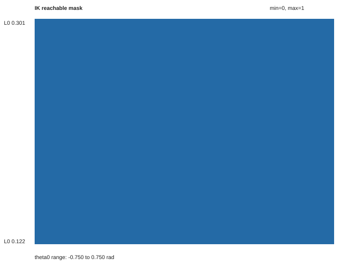
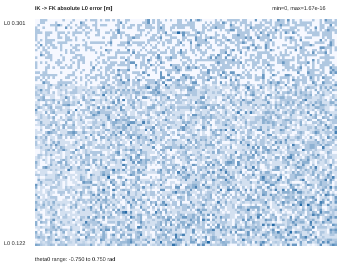
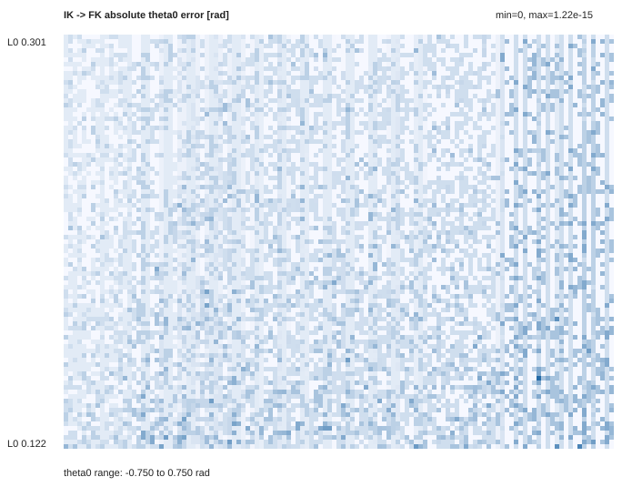
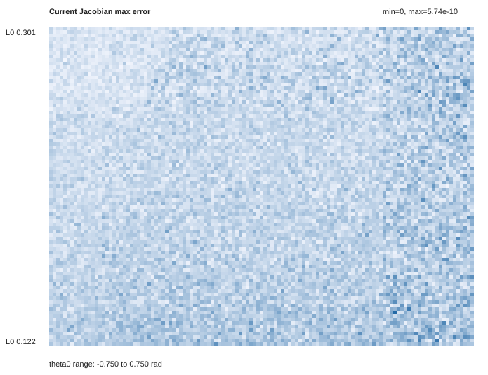
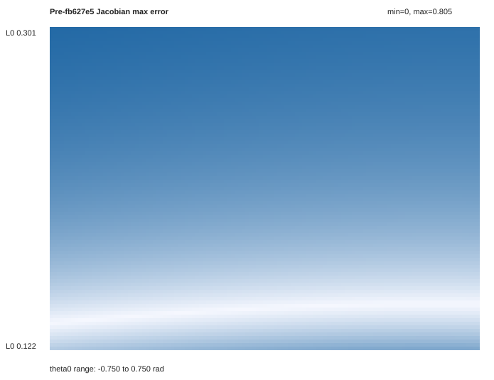
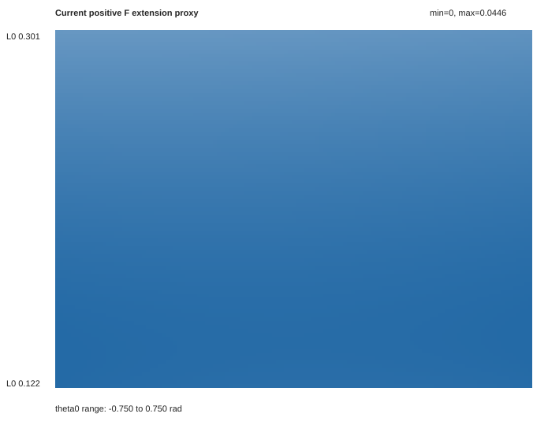
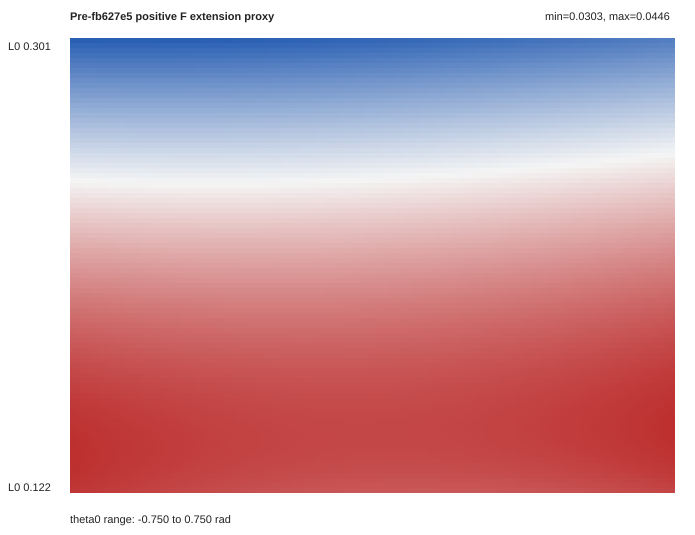
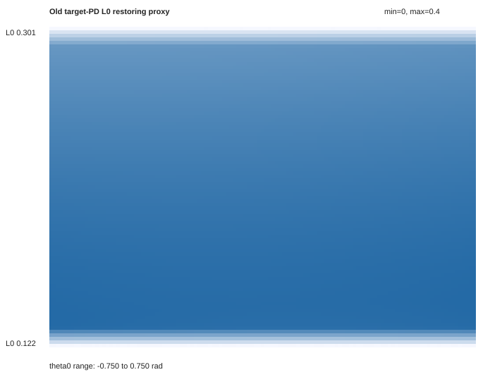
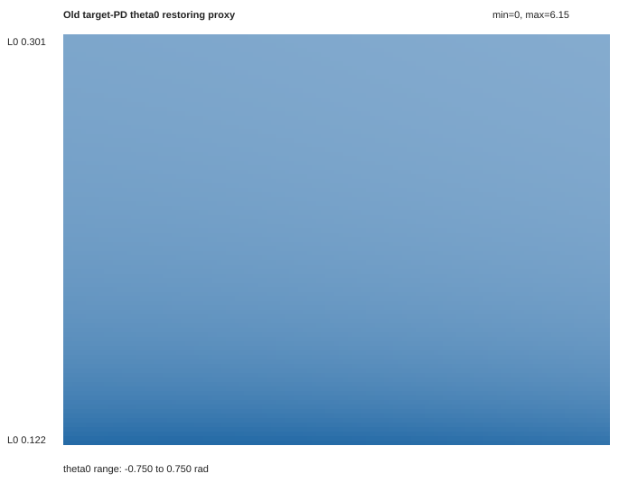
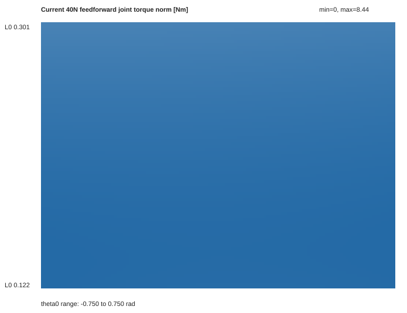

Generated by scripts/rsl_rl/sweep_vmc_pd_grid.py.
{
"grid": {
"l0": 91,
"theta0": 121
},
"ranges": {
"l0": [
0.1219258562330587,
0.3006386827708927
],
"theta0": [
-0.75,
0.75
]
},
"stats": {
"reachable": {
"min": 1.0,
"max": 1.0,
"mean": 1.0
},
"fk_l0_error": {
"min": 0.0,
"max": 1.6653345369377348e-16,
"mean": 3.7513257316482564e-17
},
"fk_theta0_error": {
"min": 0.0,
"max": 1.2212453270876722e-15,
"mean": 1.6792567523198138e-16
},
"current_jacobian_error": {
"min": 7.343181618324479e-12,
"max": 5.739436703677825e-10,
"mean": 1.4386337269753304e-10
},
"pre_fb627e5_jacobian_error": {
"min": 4.68462176539397e-06,
"max": 0.8046415600119114,
"mean": 0.48563462650566497
},
"current_force_extension": {
"min": 0.030328442449809277,
"max": 0.04455839962068307,
"mean": 0.039644570981688144
},
"pre_force_extension": {
"min": 0.030328442449809277,
"max": 0.04455839962068307,
"mean": 0.039644570981688144
},
"old_pd_l0_restoring": {
"min": -4.6866961486899846e-15,
"max": 0.4000230583215114,
"mean": 0.3277966515145859
},
"old_pd_theta_restoring": {
"min": 3.311346142512655,
"max": 6.153640578722947,
"mean": 4.07409904873997
},
"feedforward_tau_norm": {
"min": 6.966025259765775,
"max": 8.443544243568155,
"mean": 7.9532916662480915
}
},
"notes": [
"current_jacobian_error compares current vmc.py coefficients to finite-difference FK Jacobian.",
"pre_fb627e5_jacobian_error compares the mapping before commit fb627e5 to the same finite-difference Jacobian.",
"old_pd_*_restoring should be positive if old target L0/theta0 PD locally pushes errors back toward target.",
"force_extension should be positive if a positive axial F tends to increase L0 under a unit-inertia proxy."
]
}









